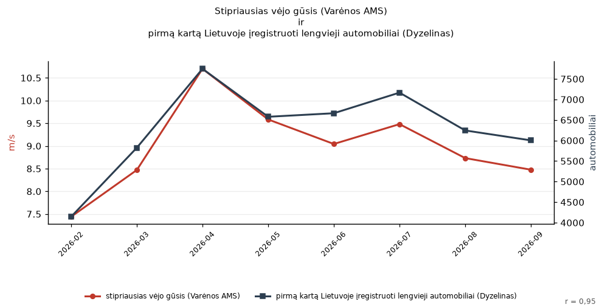

Pastaraisiais mėnesiais lyg tyčia sutapo: stipriausias vėjo gūsis (Varėnos AMS) ir pirmą kartą Lietuvoje įregistruoti lengvieji automobiliai (Dyzelinas)

Duomenų šaltiniai: LHMT orų stebėjimai · Įregistruotos transporto priemonės (Valstybės duomenų agentūra)
Stipriausias vėjo gūsis (Varėnos AMS) ir pirmą kartą Lietuvoje įregistruoti lengvieji automobiliai (Dyzelinas) kyla ir krenta kartu: r = 0,95 per 8 mėn. (2026-02 – 2026-09). Rasta atsitiktinai peržiūrėjus tūkstančius porų: tai sutapimas, o ne priežastis.
Duomenys: „stipriausias vėjo gūsis (Varėnos AMS)“ (m/s) ir „pirmą kartą Lietuvoje įregistruoti lengvieji automobiliai (Dyzelinas)“ (automobiliai).
Tyler Vigen'o „Spurious Correlations“ dvasia: iš tūkstančių atsitiktinių Lietuvos atvirų duomenų porų šios dvi tiesiog nupiešė tą pačią kreivę. Niekas jų nesieja.
Eilutės: oru_stebejimai#station=Varėnos AMS#gust → vehicles.first_registered_cars.dyzelinas